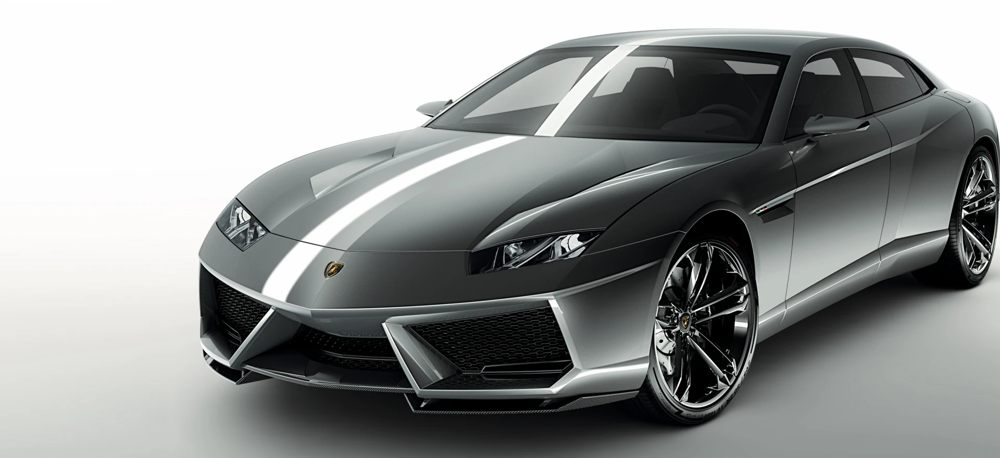

Revuelto
є початок нової ери для Lamborghini, що використовувала потужність технології гібридизації для створення першого HPEV (High Performance Electrified Vehicle). Lamborghini Revuelto, відповідаючи на потребу в екологічній стійкості та високій ефективності, переписує всі парадигми і являє собою технічний шедевр, що перевершує чиюсь уяву. Легендарний двигун V12 знаходить нове життя в цьому футуристичному автомобільному шедеврі, що забезпечує неперевершені показники та емоції від водіння.
Huracán
Ідеальне поєднання технологій та дизайну. При першому погляді на спорткар ви відчуєте незабутні емоції: чіткі аеродинамічні лінії моделі пронизують повітря і дарують відчуття переваги на дорозі. Доторкнувшись до нього, ви відчуєте справжнє захоплення, адже найкращі італійські майстри створили розкішне оздоблення неперевершеної якості. Потім ваше серце заб'ється ще частіше, коли ви натиснете кнопку запалювання, почуєте потужний звук атмосферного двигуна V10 та відчуєте всю силу суперкара. І, нарешті, особливі емоції під час водіння посилять світлодіодну систему освітлення та 12, 3-дюймовий дисплей TFT.
Urus
Urus, що є квінтесенцією свободи, дозволить вам прокласти будь-який маршрут по різних покриттях: з гоночної траси - в піщані дюни, з асфальту - на гравій, а взимку ви можете випробувати ні з чим не порівнянне задоволення від керованих ковзань на снігових і льодових трасах. Це абсолютно універсальний суперкар. Розширюючи горизонти своїх поїздок, ви знайдете нові способи самовираження, прийматимете виклики і радітиме насиченому життю. Ви не боїтеся йти вперед: це саме те, чого ви хочете. Ви ніколи не перестанете дивуватися і створювати «доповнену» реальність на власний розсуд. Приборкайте будь-які дороги, виявіть свою індивідуальність.
Aventodor
Для Automobili Lamborghini революційне мислення характерне завжди: чи йдеться про авіаційний стиль дизайну або технології, такі як двигун V12 або вуглепластик, адже прагнення вийти за загальноприйняті рамки є частиною філософії марки. Aventador долає стандарти динамічних характеристик і стає еталоном якості у сегменті суперспорткарів, передбачаючи образ автомобілів майбутнього. Сімейство суперкарів Aventador вже стало легендою.
Temerario
Lamborghini представляє Temerario – перший суперспортивний автомобіль в історії бренду із Сант-Агата-Болоньєзе, оснащений бітурбованим двигуном V8 у поєднанні з трьома електродвигунами сумарною максимальною потужністю 920 CV. Другий автомобіль у лінійці HPEV (High Performance Electrified Vehicle) – високопродуктивних електрифікованих автомобілів, досяг найвищих вершин щодо задоволення від водіння завдяки унікальним у своїй категорії характеристикам і рівням комфорту, а також демонструє нові стилістичні стандарти дизайну, пропонуючи безпрецедентні можливості персоналу. з точки зору сервісів, що підключаються.
Sian
Автомобіль Sián FKP 37, ім'я якого на болонському діалекті означає блискавка, є першим суперспорткаром, оснащеним двигуном V12 у поєднанні з гібридною технологією на основі суперконденсатора. Цей шедевр інженерної технології з неперевершеним дизайном, функціональним і футуристичним, підкорює з першого погляду. Перший гібридний суперкар, вироблений лімітованим тиражем у кількості лише 63 екземплярів, має найнижче співвідношення ваги до потужності порівняно з будь-яким іншим Lamborghini, оснащеним двигуном V12, а його швидкість може перевищувати 350 км/год. Sián FKP 37 із суперконденсатором, вперше у світі застосованим у гібридному сегменті, спрямований у майбутнє, але при цьому він зберігає всю яскравість емоцій від водіння автомобіля Lamborghini, а також впроваджує в автомобільний світ нову технологію незалежної активації компонентів.
Countach
Відколи суперкар був представлений на Женевському автосалоні 1971 року, автомобільний світ назавжди змінився. Сміливий дизайн Countach зламав усі стереотипи та, будучи повним втіленням ДНК Lamborghini, став джерелом натхнення для наступних моделей. Протягом п'ятдесяти років цей витвір мистецтва завжди залишався актуальним, а сьогодні Lamborghini віддає шану цієї культової моделі та випускає на честь її лімітовану серію зі 112 одиниць: новий Countach LPI 800-4 не лише уособлює візуальну наступність між минулим та сьогоденням, Вкотре відкриває завісу майбутнього, використовуючи найпередовіші технології Lamborghini.
Terzo
Автомобіль Terzo Millennio передбачає майбутнє і проектує емоційний вплив спортивних суперкарів в епоху "електричної революції". Концепт-кар з футуристичним дизайном, розроблений з метою максимізації аеродинамічних характеристик, стилістичного пошуку та захоплення водінням шляхом застосування передових технологічних рішень: системи накопичення енергії на основі суперконденсаторів, функціональних матеріалів з вуглецевого волокна та електричної силової установки, гідної справжнього суперспорткара.
Asterion
Asterion – це унікальний концепт-кар, що має чуттєвий дизайн, душу Lamborghini і ДНК гібриду: передові стилістичні та інженерні рішення, типові для суперкарів Lamborghini, поєднуються в ньому з інноваційною гібридною технологією. Бездоганність роботи атмосферного двигуна V10 гарантує неповторні емоції від водіння, а гібридний привод plug-in дозволяє використовувати електричний режим для міської їзди. Результат - неймовірні експлуатаційні властивості, гідні справжнього суперспорткара.
Estoque
Estoque - це універсальний концепт, що виділяється серед усіх інших з точки зору інновації, креативності та дизайну: чотиридверний суперкар на кожен день з унікальними технічними характеристиками. Неповторний стиль Lamborghini виражається через революційну концепцію седана, що відрізняється дуже низьким профілем і в той же час незвичайною комфортністю та розкішшю салону.